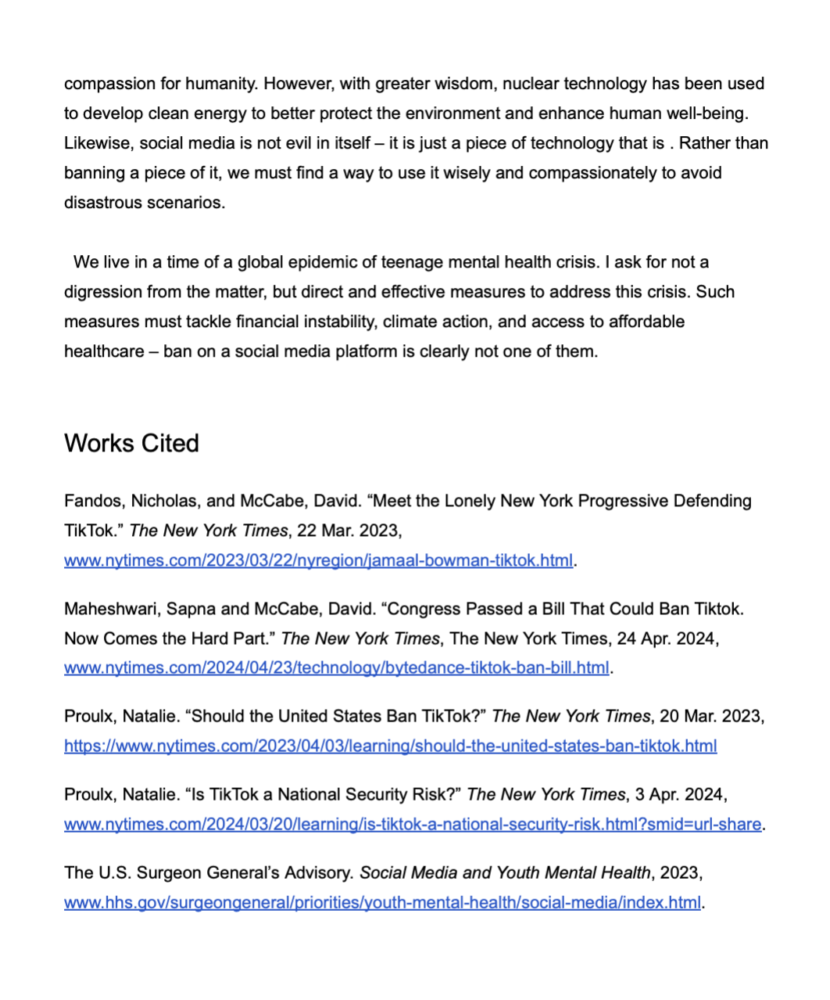
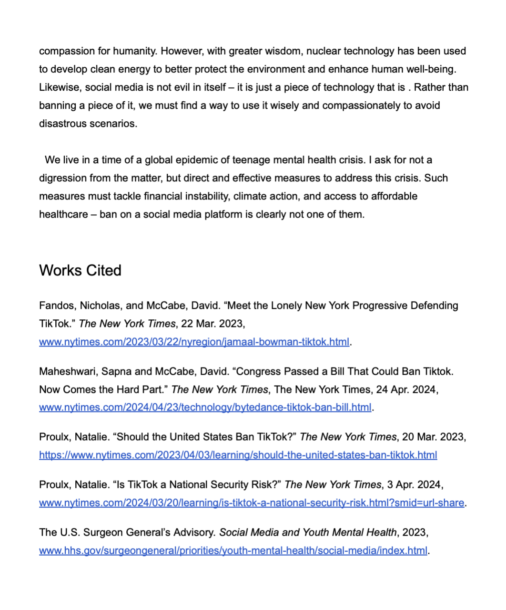

The letter raises objections to the United States' recent blocking and gives examples which young people around the world are being unwitting victims of.After pointing out the security threats facing American government computers : At the same time it is necessary for us not to view these issues narrowly or exclusively from a national security perspective but consider their impact on adolescent mental health.Faced with this, the letter encourages us to reassess our approaches to the governance of computer technologies. It is necessary that safeguarding not be the only point, but for a better global youth society to take shape.
 
